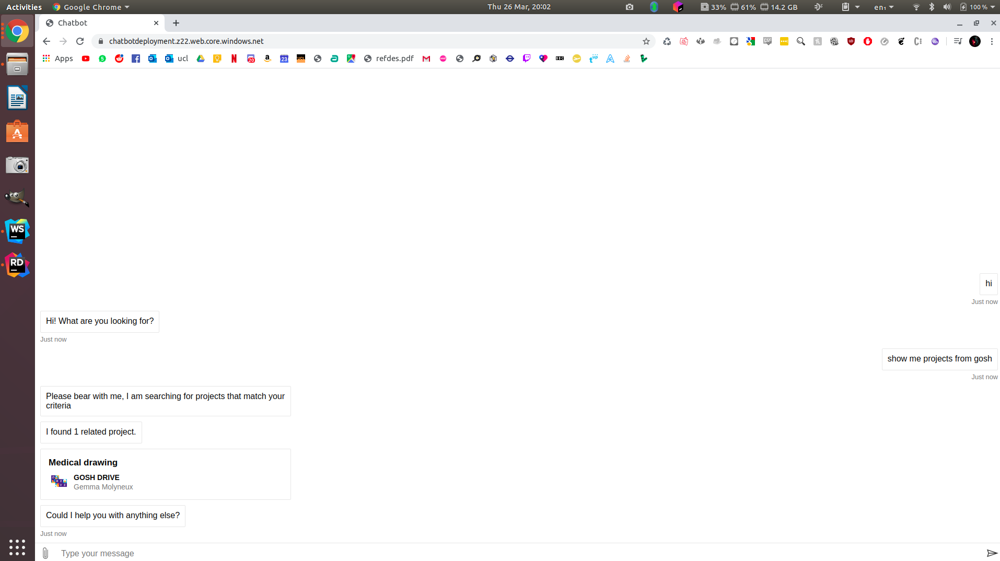
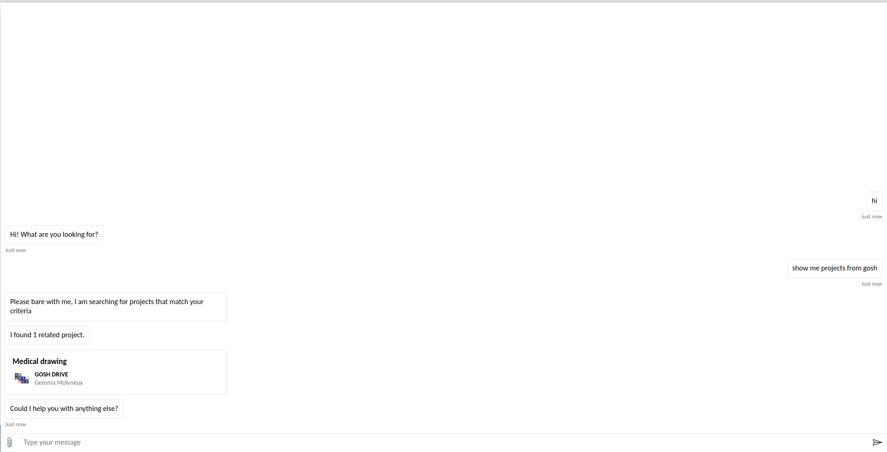
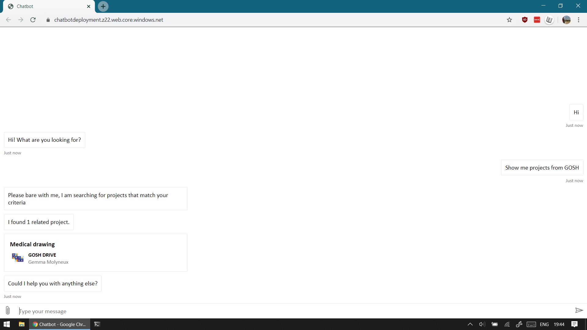
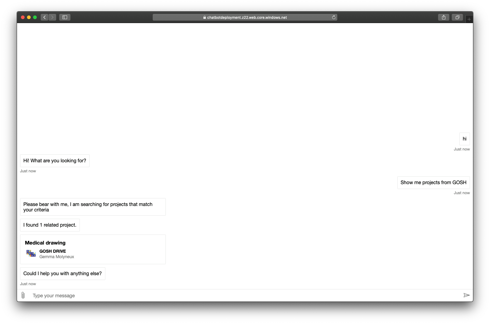
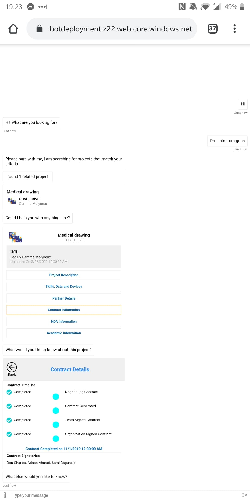
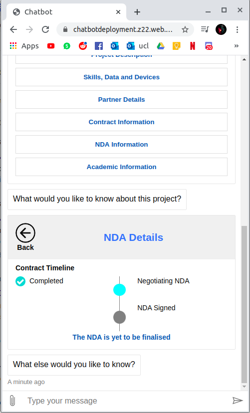
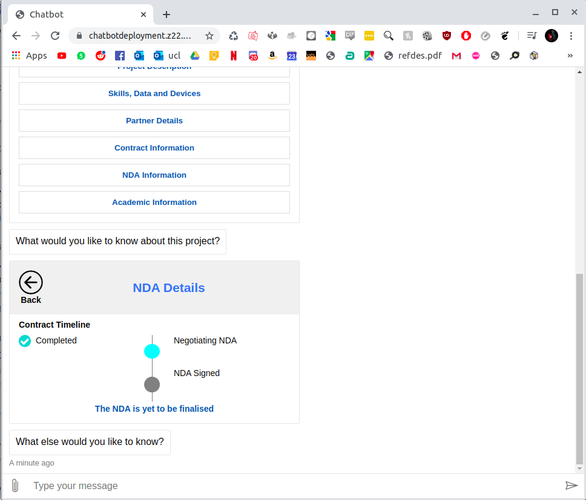
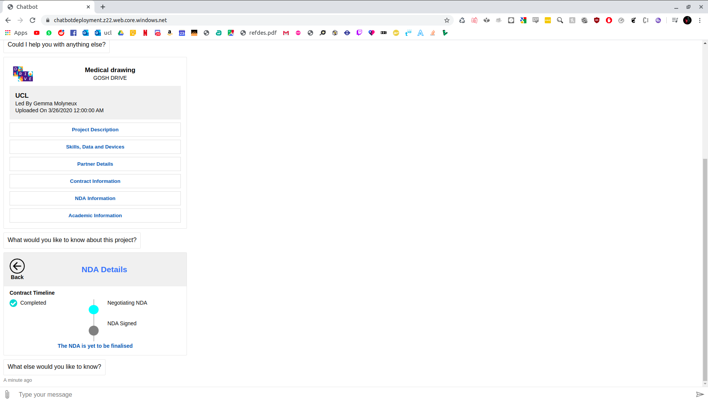

Our testing strategy involved feeding our chatbot hundreds of messages and then checking our LUIS tool to see what intents the messages were being categorised into, this allowed us to receive quantifiable information as to how accurate our chatbot was and how helpful and relevant its responses were to users. Other testing involved getting users to use our chatbot and give us feedback for things they may like to see or improvements that could be made, as well as general feedback for the feel of the application across a variety of criteria such as ease of use, helpfulness, responsiveness, UI design & user friendliness, colour appeal, functionality, etc.
One of the modules which was tested extensively was the pushFileToServer function in a version of our ixnminer, it was imperative that this function was tested extensively as we would need to be aware of any potential issues that could arise as a result of any user input. If there was any problem which could hinder the users ability to input projects into the database, it would render the functionality of the entire chatbot obsolete as the chatbot is retrieving information from the database constantly. As such, the core functionality of the ixnminer (namely the ability to push files to the database) needed to be perfect. We would supply the miner with valid, invalid and erroneous data to see if it would validate inputs correctly, and also in a way that would prompt for a valid input. This testing was carried out throughout the development as ensuring thorough unit testing of our functions ensured that our code was maintainable, reusable, and reliable. It also allowed for easier debugging as we could ensure that modules were functional and able to identify issues in newly written code as opposed to existing code.
Compatibility Testing is a type of Software testing to check whether your software is capable of running on different hardware, operating systems, applications, network environments or Mobile devices.
We carried out compatability testing by trying to launch the chatbot on several devices with varying operating systems. We only carried out the testing on the chatbot website itself as it is not a relevant test for the administration panel for the miner.
Working on Ubuntu - chrome
Working on Xubuntu - chrome
Working on Windows - chrome
Working on Mac - safari
Working on OnePlus 5T - chrome
The Responsive design test means testing the website or URL from different devices.
We carried out responsive design testing by trying to scale the chatbot differently to see if there were any issues when using a different frame size. We only carried out the testing on the chatbot website itself as it is not a relevant test for the administration panel for the miner.
Smallest frame size
Average frame size
Maximum frame size
User acceptance testing was the final stage of testing for our project, this would involve getting real users to use our system and see if it met the project requirements. It was also important that the average user was able to use the chatbot to its full potential.
Through user acceptance testing with Dr Dean Mohamedally and some others on our course, we discovered that to the avergae user, it was difficult to determine how to utilise the chatbot, they would be asking for help prompts which we did not have setup. Through modification of the code it was possible to implement an intent that determined whether the user was requesting help and additional knowledge of how to use the chatbot. After implementing this, it was significantly easier for the user to acccess key resources. This also provided the benefit of allowing us to gain even more test data for our application as it allowed us to gain variants of messages being sent to the chatbot.
Other feedback which we have received from users is that they enjoy the look of the adaptive cards, they find it easy to process the information displayed. The colour scheme was favoured by our users, the ease of messaging the chatbot in their own time and typing fashions was a key benefit of the chatbot. The responses were prompt and allowed the user to gain further information if requested. Navigation of the chatbot was found to be very simple for users as the buttons were clear, for example, the back button was universally recognised across our sample and did not require further explanation for its functionality. This intuitivity allowed for the comfortable use of our chatbot.